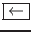
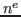

| k ou
|
Déplacement vers le haut. | |
| ou | ||
| j ou
|
Déplacement vers le bas. | |
| ou
|
||
| h ou
|
Déplacement vers la gauche | |
| ou ou  | ||
| l ou
|
Déplacement vers la droite. | |
| w ou W | Déplace le curseur au début du mot suivant. "W" permet d'ignorer la ponctuation. | |
| b ou B | Déplace le curseur au début du mot précédent. "B" permet d'ignorer la ponctuation. | |
| e ou E | Déplace le curseur à la fin du mot courrant. "E" permet d'ignorer la ponctuation. | |
| 0 (zéro) ou | (pipe) | Déplace le curseur à la première colonne de la ligne courrante. | |
| n| (pipe) | Déplace le curseur à la colonne "n" de la ligne courrante. | |
^ |
Déplace le curseur sur le premier caractère différent de l'espace ou de la tabulation sur la ligne courrante. | |
$ |
Déplace le curseur à la fin de la ligne courrante. | |
| + ou
|
Deplace le curseur au début de la ligne suivante. | |
| - | Déplace le curseur sur le premier caractère différent de l'espace ou de la tabulation de la ligne précédente. | |
| 1G | Ramène le cuseur à la première ligne. | |
| G | Déplace le curseur à la fin du fichier. | |
G$ |
Déplace le curseur à la fin de la dernière ligne du fichier. | |
| nG | Déplace le curseur à la  ligne du fichier. | |
| ( | Ramène le curseur au début de la phrase courrante. Une phrase, pour "vi" est une suite de mots séparés par des espaces ou des caractères de ponctuations et terminés par le caractère ".". | |
| ) | Déplace le curseur au début de la phrase suivante. | |
{ |
Ramène le curseur au début du paragraphe courrant. Un paragraphe, pour "vi", est une suite de phrases séparés par une ligne blanche. Cette terminologie obéit à la syntaxe de TEX et de LATEX. | |
} |
Déplace le curseur au début du paragraphe précédent. | |
La figure ![[*]](crossref.png) décrit les différentes actions de ces commandes
en fonction de la position du curseur dans le fichier.
décrit les différentes actions de ces commandes
en fonction de la position du curseur dans le fichier.
Sachant que "vi" a été dédié aux développeurs UNIX, il est
clair que "vi" reprend des notions du langage C. Lorsque la
première colonne d'une ligne du fichier contient le caractère
"{", "vi" considère tout le texte compris entre ces
deux marques (texte compris entre deux "{" situés en première
colonne) comme une section. Par exemple :
{
Le caractere sur la ligne precedente permet de marquer une section.
La prochaine section commencera des que le caractere { apparaitra
a nouveau en premiere colonne dans le fichier.
{
Ici nous sommes dans une nouvelle section. On pourrait faire l'analogie
avec le langage C lorsque l'on declare le corps d'une
fonction. En effet on aura :
main()
{
section associee au corps de la fonction main.
Donc nous sommes ici dans la troisieme section de ce fichier texte.
}
ma_fonction()
{
section associee au corps de la fonction ma_fonction.
Donc nous sommes ici dans la quatrieme section de ce fichier texte.
}
Pour se déplacer d'une section à l'autre, "vi" dispose des commandes suivantes :
[[ |
Ramène le curseur au début de la section courrante. | |
]] |
Déplace le curseur au début de la section suivante. | |